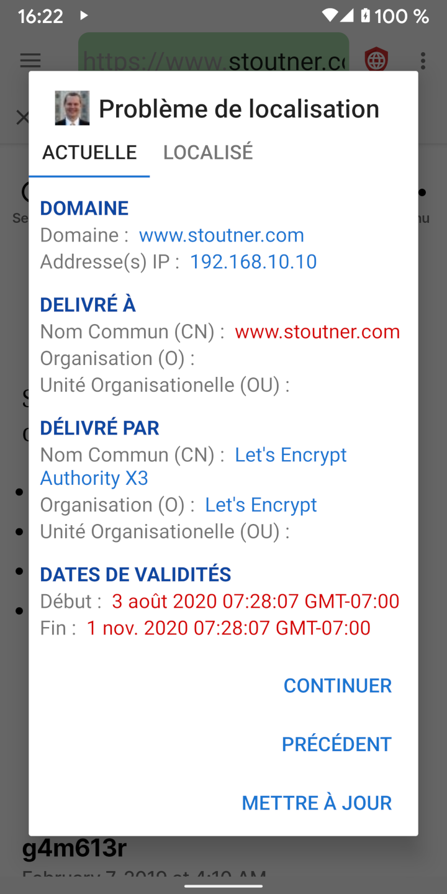
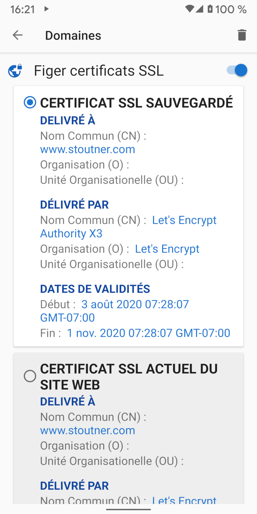

Lors de la visite d'une URL chiffrée (commençant par HTTPS), le serveur Web utilise un certificat SSL pour chiffrer les informations envoyées au navigateur et identifier le serveur. L'identification du serveur a pour but d'empêcher une machine située entre le navigateur et le serveur Web de se faire passer pour le serveur et de décrypter les informations en transit. Ce type d'attaque est connu sous le nom d'attaque MITM (Man In The Middle). Les certificats SSL sont générés par les autorités de certification: sociétés qui vérifient l'identité d'un serveur et produisent un certificat contre rémunération. Android dispose d'une liste d'autorités de certification de confiance et accepte n'importe lequel de ses certificats, quel que soit son site Web. Il n'est pas censé être possible pour une entreprise d'acquérir un certificat SSL pour un domaine qu'elle ne contrôle pas. mais dans la pratique, de nombreux gouvernements et grandes entreprises ont pu le faire.
Épingler un certificat SSL indique au navigateur qu'un seul certificat SSL spécifique doit être approuvé pour un domaine particulier. Tout autre certificat, même s'il est valide, sera rejeté.
Les certificats SSL expirent à une date spécifiée. Par conséquent, même les certificats SSL épinglés devront légitimement être mis à jour de temps à autre. En règle générale, l'épinglage de certificats SSL n'est probablement pas nécessaire dans la majorité des cas. Mais pour ceux qui soupçonnent que des organisations puissantes pourraient les cibler, l'identification de certificats SSL peut détecter et contrecarrer une attaque MITM. Clear Browser peut également épingler des adresses IP.
Les certificats SSL peuvent être épinglés dans les paramètres du domaine. Outre la protection contre les attaques MITM, épingler un certificat auto-signé pour un périphérique tel qu'un routeur sans fil ou un point d'accès supprimera le message d'erreur normalement affiché à chaque chargement de son site Web. Tapez sur l'onglet actif pour afficher le certificat SSL du site Web courant.